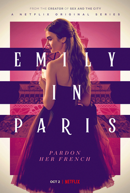
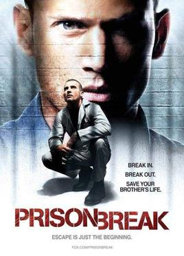
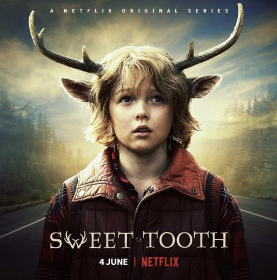
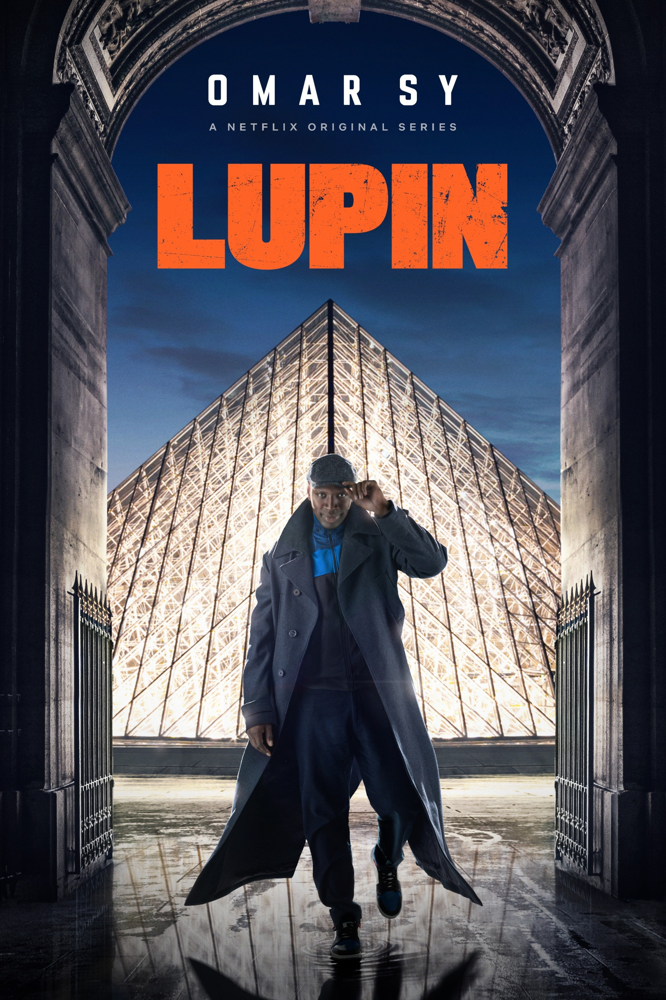
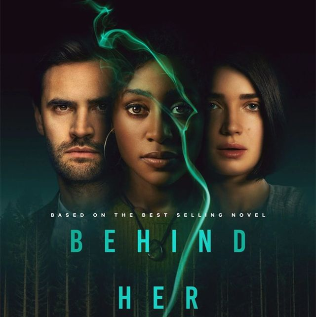

美劇推薦
美劇推薦
美劇推薦
1. Emily in Paris 艾蜜莉在巴黎
2. Prison Break 越獄風雲
3. Sweet Tooth 鹿角男孩
4. LUPIN 亞森．羅蘋
5. Behind Her Eyes三人要守密，兩人得死去
1. Emily in Paris 艾蜜莉在巴黎
故事講述出身芝加哥的Emily因公司收購了一家法國奢侈品行銷公司，剛巧因上司懷孕而獲得
到法國巴黎出差的夢幻工作機會。而身在他鄉的她卻因兩地文化各異而鬧出不少笑話，在巴黎
的新生活充滿各種出乎意料的挑戰，無論在工作上、人際關係上還是愛情上也彷如一場冒險，
處處碰壁亦愈戰愈勇。

Emily in Paris艾蜜莉在巴黎說是Netflix年度話題之作也不為過，不少劇迷看完後也大呼想
飛到巴黎偶遇天菜主廚。劇情輕鬆節奏快，劇中金句百出讓人反思人生。另外，劇中佳人、
美景相當吸睛外，每位主演的衣著穿搭也各有特色，看劇之餘更彷如看了一場時裝秀。
2. Prison Break 越獄風雲
不少人也因為Prison break而開始關注起美劇！總共有5季及特別篇的Prison break是講述主
角的哥哥被人誣陷要殺害副總統的哥哥，因而被判死刑。主角為了拯救被誣陷的兄弟決定利用在
未執行死刑前的時間，秘密助其兄策劃了詳盡的越獄計劃，不過世事並不盡如人意，主角和其兄
在進行越獄計劃時，身邊不斷有不可預料的事情發生。

Prison Break角色自願性入獄再逃獄的劇情設計相當有趣，它每一季都能把懸疑的故事情節由第
一集串連到最尾一集，令人有追看下去的樂趣。就好像第一季為了拯救其兄主角Michael決定搶劫
銀行，然後與兄弟關進同一監獄，然後與其他獄友廣泛結盟，慢慢發現原來事件並不給我想象中簡
單。然後到第2季兩位主角各自的逃亡生涯，再慢慢發展成揭開陰謀的背後。5季中不斷以監獄作背
景，加入不同元素。
3. Sweet Tooth 鹿角男孩
Netflix原創影集《鹿角男孩》由「鋼鐵人」小勞勃道尼監製，故事設定在遭受病毒「H5G9」侵襲後，
多數人因染疫去世，進入世界末日，地球上的新生兒也因為病毒而變成了半人半獸的模樣，有人怪罪是
這些「半人」造成世界末日，因此開始獵殺半人，而男主角「格斯」就是一位半人半鹿的小男孩，他從
小隱居與「帕爸」隱居在深山，某一天外來者入侵，帕爸保護他而死，孤身一人的格斯決定鼓起勇氣展
開冒險，自己去尋找媽媽，黑色童話中夾雜人性黑暗面，透過孩子的視角帶出希望與純真，是一部暖心
的奇幻之作。

4. LUPIN 亞森．羅蘋
《亞森・羅蘋》共兩季。第一季上架後人氣高漲而火速推出第二部，亞森為了父親不惜一切向于貝爾尋
仇，卻導致自己的家庭支離破碎，更成為全球通緝犯。躲避于貝爾的手下的同時，他必須設法尋找兒子
拉烏，在逃亡的旅途中，結交了意想不到的盟友，並佈下妙計揭發于貝爾的罪行。只有5集的《亞森羅蘋》
輕快不晦澀，緊湊張力更讓它成為一部十足的爽片，不過它也沒有忘記供應滿滿的原著彩蛋，以及訴說
現今社會中理所當然的矛盾，如何成為當代羅蘋巧妙的障眼。

5. Behind Her Eyes三人要守密，兩人得死去
Netflix懸疑驚悚影集《三人要守密，兩人得死去》內容燒腦萬分，播出後反轉劇情引起粉絲熱烈討論，
劇情講述單親媽媽露易絲，與精神科醫生兼新老闆「大衛」發展婚外情，同時在機緣巧合下，又認識了大
衛的妻子艾黛兒，乍看之下，像是一場兩女爭一男的三角戀，但當露易絲對大衛和艾黛兒兩人的關係深入
了解後，竟發現這對夫妻隱藏著不可告人的祕密。
